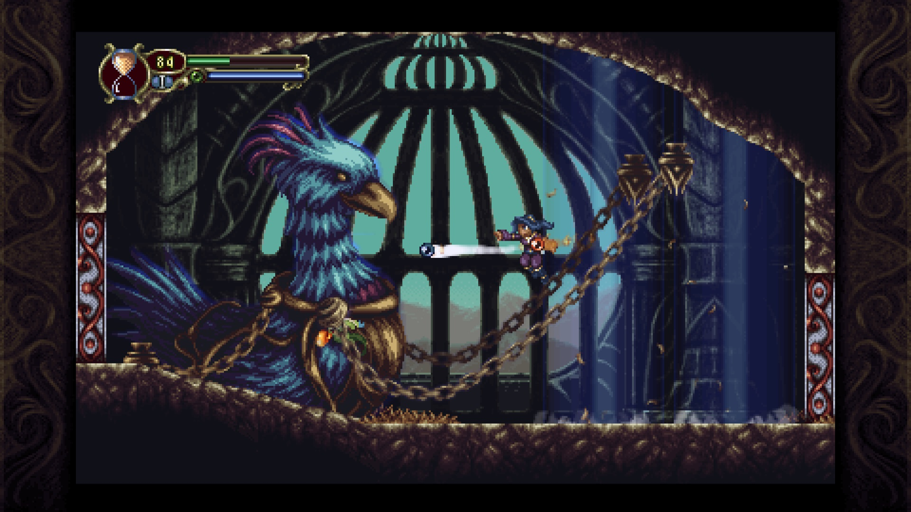

Timespinner

Under 1980- och 1990-talet släpptes det två spel som har fått ett enormt inflytande under det andra millenniet. Dessa två är Metroid till Nintendo Entertainment System och Castlevania: Symphony of the Night till PlayStation och Sega Saturn, släppta 1986 respektive 1997. Medan Metroid startade som en sidescroller med en öppen värld som öppnar upp sig mer under spelets gång med powerups, som senare utvecklades i Super Nintendos klassiker Super Metroid, så anammade Castlevania-serien detta i seriens tolfte upplaga. Dessa två spel skapade tillsammans en genre vid det fyndiga namnet Metroidvania, som under 2000-talet är en av de mest populära genrerna bland indieutvecklare.

Symphony of the Time
Många indieutvecklare har gjort en mängd varierande spel i denna genre under åren, samtidigt som grunden för ett Metroidvania kvarstår. Team Cherrys Hollow Knight till exempel, använder sig av en handanimerad konsstil, samt endast ett fåtal uppgraderingar som gör att spelet har en konstant svårighetsgrad. Lunar Ray Games har däremot blivit inspirerade väldigt mycket av Symphony of the Night.
Grafiken i Timespinner är pixelerad, och liknar någonting från den tidiga 32-bitseran. I denna pixelvärld tar man sig igenom grottor, slott, och ett biokemiskt labb, samtidigt som man möter bossar som tar upp hela skärmen, och uppgraderar sin arsenal. Kartan fylls ju mer rum och områden man utforskar, och man kan även köpa föremål hos en talande kråka i ett bibliotek. Detta är snarlikt Symphony of the Night, förutom att det är en människa man handlar av.
Metroidspinner
I Timespinner styr man Lunais, en 20-årig tjej från planeten Winderia som färdas till planeten Lachiem genom en portal. Väl där så får hon förmågan att stanna tiden en kort stund, och även förmågan att hoppa tusen år framåt och bakåt i tiden. Lunais mål i spelet är att förgöra Lachiem Empire, som har koloniserat planeter i tusentals år. Under spelets gång kan man samla valfria dokument där man kan läsa mer om historien bakom Winderia och Lachiem.
Lunais är utrustad med två sfärer, en i varje hand. Dessa sfärer kan uppgraderas för bättre styrka och bättre defens, och det finns en mängd av olika sorters sfärer med olika egenskaper. Min personliga favorit var hammarsfären med sin styrka, men det finns även sfärer för till exempel is- eller eldattacker om man önskar det. Man har också med sig ett litet djur, eller Familiar som det heter i spelet, som hjälper till att attackera sina motståndare. Dessa Familiars har även dem olika attacker och kan uppgraderas.
Trots att Timespinner är ett ganska kort spel finns det en mängd alternativ utrustning att kombinera. Detta är ett bra sätt för spelet att känna sig fräscht för upprepade spelningar. Det finns även ett antal hemliga bossar att slåss mot om man vill ha sig en utmaning.
Sammanfattning
Timespinner är ett charmigt Metroidvania som är lätt att sätta sig in i utan komplicerade handledningar. Dess korta speltid och simpla gameplay gör Timespinner till ett perfekt spel för dig som inte letar efter något stort. Däremot saknar det några nya, innovativa element som många spel i samma genre har nuförtiden.
Att utforska Lachiem är ett suveränt tidsfördriv som lär uppskattas av många. Vare sig du har spelat Symphony of the Night eller inte så lär du ha kul med Timespinner!